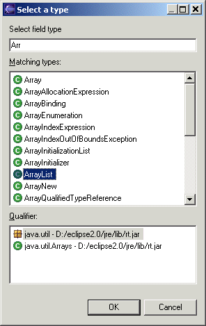

Add Exception DialogThe Add Exception Dialog allows you to create or edit the specification of an exception declared for a method. ClassThe class field allows you to enter the name of the class of the exception to be declared. If you click on the button labeled "Browse..." beside the class field, a Select Type Dialog will be opened to allow you to select the name of the class rather than type it in directly.  CommentThe comment field allows you to specify a documentation comment for the exception. The comment should explain the circumstances under which the exception will be thrown. OKClose the dialog, creating or editing the exception, as appropriate. CancelClose the dialog without creating or editing the exception. |